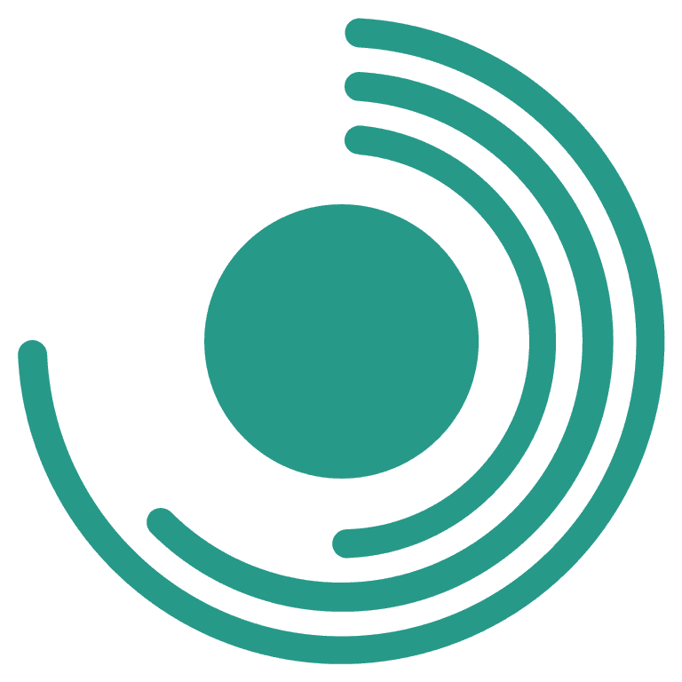
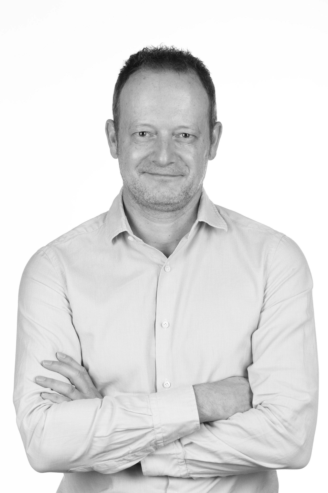

ESG & Sustainability Strategy Advice
Practical strategy advice aligned with evolving frameworks such as CSRD and CSDDD.

I help companies, investors and financial institutions identify and manage material ESG, sustainability and reputational risks. From double materiality and controversy analysis to ESG methodologies and AI-enabled tools, I translate complex sustainability requirements into practical, decision-ready insight.
Practical strategy advice aligned with evolving frameworks such as CSRD and CSDDD.
Identifying material impacts, risks and opportunities from both impact and financial materiality perspectives.
Screening and assessing ESG incidents that put reputation, licence to operate or regulatory standing at risk.
Designing and developing AI-powered tools that turn ESG and sustainability data into practical screening and decision-support solutions.
Investors, financial institutions, corporates, ESG data providers, sustainability teams, risk departments, boards and NGOs.
Product management of Sentometrics' UNGC Risk Incident Database, an ESG controversy and due-diligence screening tool.
Development of Durably's AI-enabled Sustainability Scan, screening greenwashing and social-washing risk in marketing claims.
ESG advisory support to PMV on KPI relevance, ESG tool outputs, client cases and practical implementation.
An app that teaches ESG regulation — CSRD, SFDR, greenwashing rules and forced-labour supply-chain risk — through short daily quizzes.
Visit sustainwiseapp.com →
Previously AVP ESG Analytics and Product Manager for Controversy Risk Assessment at Moody's, leading a team of 20 ESG analysts on Moody's ESG Incidents Screening. Before that, over a decade at VIGEO EIRIS (now part of Moody's) as Site Manager and ESG Research Manager, covering sector ratings, controversy analysis and responsible-investment screening.
Executive Master in Management (Solvay Brussels School of Economics & Management), CSRD Professional certified, and Board Member at Forum Ethibel.
Based in Dilbeek, near Brussels, I provide flexible support for short-term assignments, targeted ESG analyses and larger advisory projects.
While I primarily work remotely, I am available to work on-site when required to ensure optimal collaboration and results.
My goal is to provide solutions that align perfectly with your business objectives, delivering value in a way that works best for you.